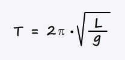
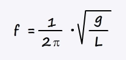
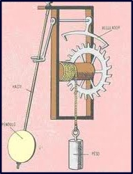
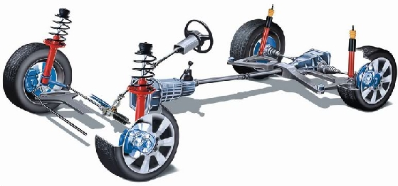
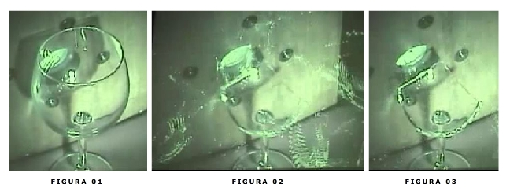

Considere um pequeno corpo de massa m preso em uma extremidade de um fio de comprimento L cuja outra extremidade superior está presa em um suporte fixo qualquer. Deslocamos então esse corpo um pouco para a direita e o soltamos. Temos um movimento pendular fácil de reproduzir e de perceber que é um movimento periódico. O que não percebemos tão facilmente é que, em certas condições, esse movimento pode ser modelado matematicamente como um MHS. Mas uma análise na simulação abaixo permite essa visualização.
Observe que a projeção da posição da massa pendular sobre um eixo horizontal descreve um MHS. Isso é verdade desde que o ângulo inicial que o fio faz com a direção vertical não seja muito grande.
Analisando esse fenômeno por meio de um experimento real (lembre-se das aulas no laboratório), alterando a massa pendular e o comprimento do fio, concluímos que:
Não tão simples de concluir, mas possível com alguma álgebra ou com experimentos mais sofisticados, é que o período de oscilação depende do campo gravitacional. Aumentando o campo gravitacional o período aumenta.
De posse dessas informações, podemos deduzir uma expressão matemática para o cálculo do período de oscilação de uma massa pendular usando análise dimensional.
Sabendo que a frequência é o inverso do período, temos que:
O vídeo abaixo mostra a plástica visual de um conjunto de pêndulos com diferentes comprimentos e, consequentemente, diferentes frequências de oscilação. Observe com cuidado, e percebe que cada pêndulo oscila com frequência constante durante o experimento!
No sistema massa-mola que estudamos, as forças dissipativas não foram consideradas. Porém, elas existem. Para que uma oscilação continue com amplitude constante é necessário que se reponha a energia dissipada. Isso acontece com os relógios de pêndulo, por exemplo, conforme mostrado abaixo, onde energia potencial gravitacional é usada para repor a energia dissipada no movimento do pêndulo. Também é possível repor essa energia com energia potencial elástica.
Entretanto, a dissipação de energia pode ser desejada em um sistema oscilante, como acontece com o sistema de amortecimento de veículos, que funciona a base de molas.
Se energia é fornecida a um sistema oscilante a uma taxa maior do que este dissipa, então a amplitude da oscilação tende a aumentar. Mas existe uma condição onde a transferência de energia é máxima: a frequência da fonte excitadora ser muito próximo (ou igual, em uma condição ideal) da frequência natural do sistema oscilante. Nesse caso, como a transferência de energia é máxima, a amplitude de oscilação também será máxima, podendo causar danos físicos ao sistema.
O vídeo abaixo mostra um professor estimulando uma oscilação em uma frequência diferente da frequência natural do sistema e, logo depois, na mesma frequência natural do sistema. Veja o que acontece:
A seguir, vemos uma sequência de três imagens extraídas de um vídeo onde uma onda sonora tem a mesma frequência que a frequência natural de um copo de cristal. O copo absorve energia a uma taxa máxima, aumentando sua amplitude até quebrar.
Agora, vejamos o vídeo de um experimento onde uma onda sonora incide sobre uma taça de cristal, tal que a frequência do som é igual à frequência natural da taça. O que será que pode acontecer?
Veja mais dois vídeos sobre o fenômeno de ressonância: